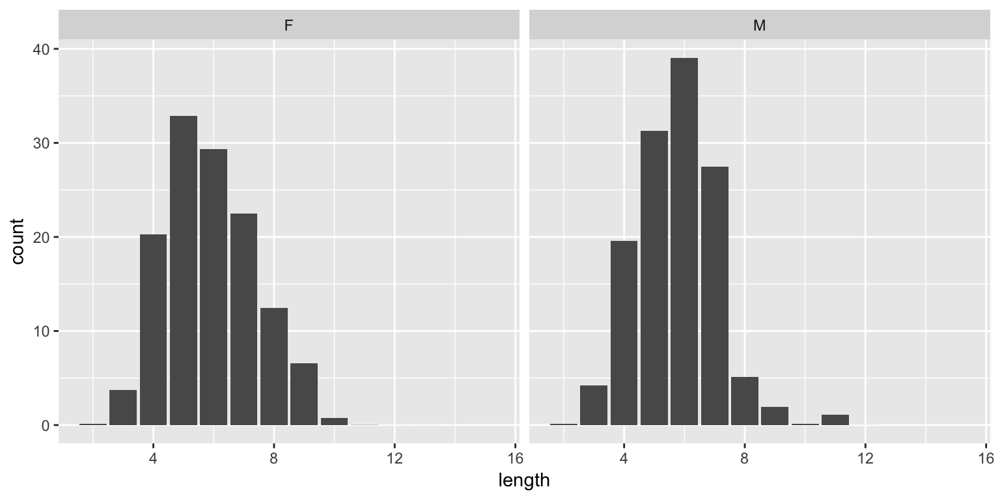

DS 202: Regular Expressions
Heike Hofmann
Regular Expressions - working with text

An example
- Baby Name Wizard: NameVoyager (Martin Wattenberg, 2000)
- http://www.babynamewizard.com/voyager
- Explores popularity of names over the last century: boys’ and grils’ names in top 1000 since 1880 are included
Your Turn (6 mins)
 For this exercise, go to the Baby Name wizard at http://www.babynamewizard.com/voyager
For this exercise, go to the Baby Name wizard at http://www.babynamewizard.com/voyager
- When was your name the most popular since 1880?
- How popular are names starting with ‘A’?
- Are names ending on ‘e’ more likely to be girls’ or boys’ names?
stringr package
- Character manipulation: functions to allow you to manipulate individual characters within the strings in character vectors.
- Whitespace tools: add, remove, and manipulate whitespace.
- Locale sensitive operations.
- Pattern matching functions: most common is regular expressions.
Babynames in R
Top 1000 baby names from 1880 to 2015 based on Social Security Agency
library(tidyverse)
library(babynames)
head(babynames)
## # A tibble: 6 x 5
## year sex name n prop
## <dbl> <chr> <chr> <int> <dbl>
## 1 1880 F Mary 7065 0.0724
## 2 1880 F Anna 2604 0.0267
## 3 1880 F Emma 2003 0.0205
## 4 1880 F Elizabeth 1939 0.0199
## 5 1880 F Minnie 1746 0.0179
## 6 1880 F Margaret 1578 0.0162
bn <- sample(babynames$name, size = 10)
bn
## [1] "Michiko" "Ryley" "Lattie" "Graciela" "Aiyona"
## [6] "Ardene" "Tovah" "Amilcar" "Joanmarie" "Florine"
str_length
Extract the number of characters in a character vector
## [1] "Michiko" "Ryley" "Lattie" "Graciela" "Aiyona"
## [6] "Ardene" "Tovah" "Amilcar" "Joanmarie" "Florine"
library(stringr)
str_length(bn)
## [1] 7 5 6 8 6 6 5 7 9 7
Length of babies’ names
babynames$length = str_length(babynames$name)
babynames %>% ggplot(aes(x = length, weight = prop)) +
geom_bar() +
facet_wrap(~sex)

str_sub
str_sub(string, start = 1L, end = -1L) extract sub strings from start to end
## [1] "Michiko" "Ryley" "Lattie" "Graciela" "Aiyona"
## [6] "Ardene" "Tovah" "Amilcar" "Joanmarie" "Florine"
str_sub(bn, start=2, end = 2) # second character
## [1] "i" "y" "a" "r" "i" "r" "o" "m" "o" "l"
Your Turn (6 mins)
For this exercise, use the babynames dataset provided in the R package babynames.
- Introduce a variable
length into the baby names data that contains the length of each name
- Extract the first letter of each name. Visualize in a barchart, facet by Gender.
- Extract the last letter of each name. Visualize in a barchart, facet by Gender.
Regular Expressions
- A regular expression (regex, regexp) is a sequence of characters that form a search pattern
- Originated in 1950s. American mathematician Stephen Kleene formalized the description of a regular language.
- Common usage with Unix text processing utilities ed, an editor, and grep (global regular expression print), a filter.
- R language provides this capability through various functions.
Regular expressions in the stringr package
str_detect(strings, pattern): binary result: is pattern in string?str_count(strings, pattern): integer: how often is pattern in string?str_locate(strings, pattern): matrix of two integers: start and end location of first occurrence of pattern in string?str_replace(strings, pattern, replacement): replace pattern in string by replacement
Your Turn (6 mins)
For this exercise, use the babynames dataset provided in the R package babynames.
- Introduce a variable called
as in the babynames dataset that keeps track of how many as are in a name. Don’t forgt about upper case letters. What are the names with the most number of ’a’s for boys and girls?
- Compare the number of ’a’s in names with the number of `e’s. Are there more ’a’s in names than ’e’s? - How do you take popularity of a name into account?
Basics of regular expressions
| ordinary characters |
match themselves |
$ ^ { [ ( ) ] } * + ? \ |
special characters |
[abc] |
matches single letter from “a”, “b”, or “c” |
[^abc] |
matches any single letter other than “a”, “b”, and “c” |
[a-gm] |
matches any single letter out of “a”, “b”, … “g” or “m” |
[a-z][0-9] |
matches one lower case letter followed by a digit |
Your Turn (6 mins)
For this exercise, use the babynames dataset provided in the R package babynames.
- Introduce a variable into the
babynames data set that shows the number of vowels in each name.
- Identify names that start witha vowel. How does the proportion of names starting with a vowel change over time?
Basics of regular expressions (cont’d)
\x |
match a hexadecimal number |
\s |
whitespace |
| ^ |
starting position within the string |
| $ |
ending position with in the string |
< > |
start, end of a word |
\t \r \v \n |
tab, carriage return, vertical tab, new line |
Multipliers
? indicates there is zero or one of the preceding element, eg colou?r matches “color” or “colour”* indicates there is zero or more of the preceding element, eg ab*c matches “ac”, “abc”, “abbc”, “abbbc”, …+ indicates there is one or more of the preceding element, eg ab+c matches “abc”, “abbc”, “abbbc”, …. matches any single character, eg a.c matches “abc” or “atc”
Advanced Patterns
see ?regex
[:alpha:] Any alphabetic character[:lower:] Any lowercase character[:upper:] Any uppercase character[:digit:] Any digit[:alnum:] Any alphanumeric character (alphabetic or digit)[:blank:] Any white space character (space, tab, vertical tab)[:graph:] Any printable character, except space[:print:] Any printable character, including the space[:punct:] Any punctuation (i.e., a printable character that is not white space or alphanumeric)[:cntrl:] Any nonprintable character
Examples
What do these regular expressions do?
.at
[hc]at
[^t]at
[^hc]at
^[S]tat
[S]tat$
Trickier Examples
What do these regular expressions do?
^s.*
[A-Z]\{3,\}
\[.\]
[bB]ar ?[cC]hart
^[0-9]{5}$
^(\d{3}-\d{3}-\d{4})*$
(\w[-._\w]*\w@\w[-._\w]*\w\.\w{2,3})
Your Turn (6 mins)
- write out the regular expression for a number in scientific notation.
- how can we try out whether the pattern works?